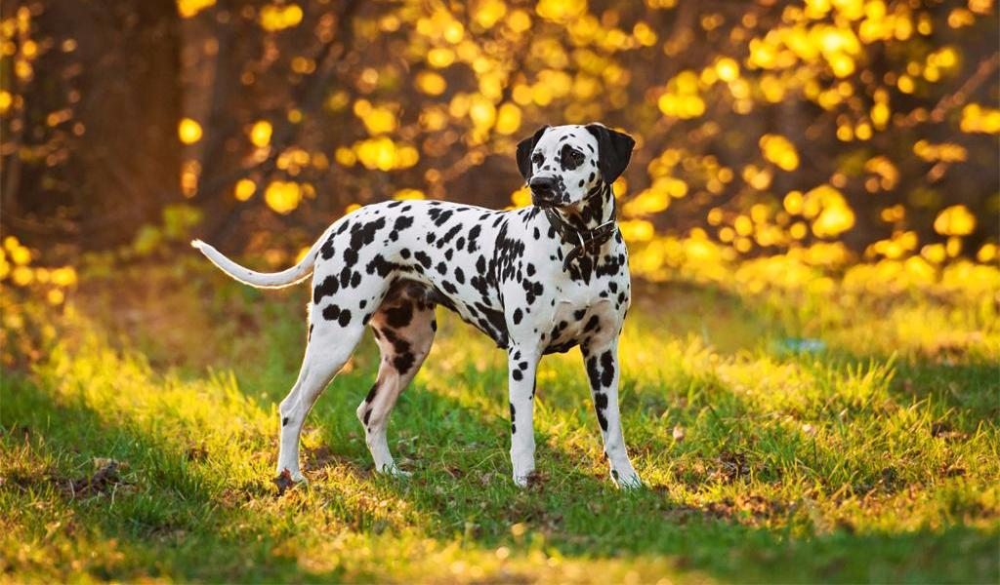

Далматин принадлежит к числу пород, которым «медийность» и сиюминутная популярность принесли больше вреда, чем пользы. Собаки с непростым характером и высокими потребностями к ежедневным упражнениям уживаются далеко не с каждым поклонником диснеевского мультфильма. Зато опытные и ответственные владельцы найдут в энергичном создании преданного друга и прекрасного компаньона.